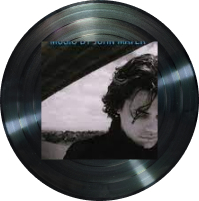

블루스, 재즈
2022~
John Mayer(존 메이어)
.jpg)
lp에 마우스를 올려주세요!

가사 보기(Gravity - John Mayer)
Gravity
Gravity is working against me
And gravity wants to bring me down
Oh I'll never know what makes this man
With all the love that his heart can stand
Dream of ways to throw it all away
Oh Gravity is working against me
And gravity wants to bring me down
Oh twice as much aint twice as good
And can't sustain like a one half could
It's wanting more
That's gonna send me to my knees
[repeat]
Oh gravity, stay the hell away from me
And gravity has taken better men than me (Now
how can that be?)
Just keep me where the light is
Just keep me where the light is
Keep you all where the light is
Just keep us where the light is
Ohh... where the light is! [repeat]
설명 보기
가창력, 연주력, 작곡력이 삼합을 이룬 셀프 프로듀스 앨범! [CONTINUUM]
3년 만에 소개되는 존 메이어의 새 앨범 [Continuum]은
‘내추럴’함을 장기로 내세웠던 그의 음악 세계의 결정판이라 할 만하다.
이는 첫 세 곡을 통해서만도 확연히 드러나고 있는 부분인데,
‘Waiting On The World To Change’의 여유로운 호흡,
‘I Don’t Trust Myself(With Loving You)’에서의 유려한 감각,
‘Belief’에서의 탁월한 연주 등, 모든 면에서 광채를 발하는 존 메이어의 현재상을 감지할 수 있다.
가사 보기(Slow Dancing in a Burning Room - John Mayer)
It's not a silly little moment
It's not the storm
before the calm
This is the deep and dying
breath of this love
we've been working on
Can't seem to hold
you like I want to
so I can feel you in my arms
Nobody's gonna come
and save you
we pulled too many
false alarms
We're going down
and you can see it too
We're going down
and you know that we're doomed
y dear we're slow
dancing in a burning room
I was the one
you always dreamed of
you were the one I tried to draw
how dare you say
it's nothin to me
baby you're the only
light I ever saw
I make the most
of all the sadness
you'll be a bitch
because you can
you try to hit me just hurt me
so you leave me feelin dirty
cause you can't understand
We're going down
and you can see it too
We're going down
and you know
that we're doomed
My dear we're slow
dancing in a burning room
Go cry about it why don't you
Go cry about it why don't you
Go cry about it why don't you
My dear we're slow dancing
in a burning room
Don't you think
we oughta know by now
Don't you think we should
have learned somehow
Don't you think
we oughta know by now
Don't you think we should
have learned somehow
설명 보기
가창력, 연주력, 작곡력이 삼합을 이룬 셀프 프로듀스 앨범! [CONTINUUM]
3년 만에 소개되는 존 메이어의 새 앨범 [Continuum]은
‘내추럴’함을 장기로 내세웠던 그의 음악 세계의 결정판이라 할 만하다.
이는 첫 세 곡을 통해서만도 확연히 드러나고 있는 부분인데,
‘Waiting On The World To Change’의 여유로운 호흡,
‘I Don’t Trust Myself(With Loving You)’에서의 유려한 감각,
‘Belief’에서의 탁월한 연주 등, 모든 면에서 광채를 발하는 존 메이어의 현재상을 감지할 수 있다.